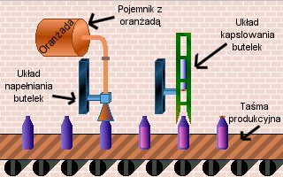

Lekcja 3
W lekcji trzeciej zajmiemy siê obs³ug¹ linii produkcyjnej. Naszym zadaniem jest produkcja oran¿ady, która okazuje siê nieodzowna w ¿yciu ka¿dego ucznia.
Po w³¹czeniu lekcji trzeciej oczom naszym ukazuje siê "fabryka":

Produkcja butelek odbywa siê w dwóch etapach. Po taœmie produkcyjnej puste butelki wêdruj¹ do uk³adu nape³niaj¹cego je oran¿ad¹. W drugim etapie nape³nione butelki s¹ kapslowane i zje¿d¿aj¹ z taœmy (do wykwalifikowanych pracowników pakuj¹cych napoje w skrzynki).
Sterowanie pierwszym etapem produkcji (nape³nianie) odbywa siê w nastêpuj¹cy sposób:
- Rurkê (ukryt¹ w lejku), z której nalewana jest oran¿ada mo¿na podnosiæ i opuszczaæ. Aby butelka mog³a przejechaæ, lejek musi byæ podniesiony. Sterowanie kierunkiem ruchu lejka odbywa siê przez komórkê LEJEK.
- Mo¿na otworzyæ lub zamkn¹æ dop³yw oran¿ady. Aby oran¿ada nie rozlewa³a siê po hali produkcyjnej, w trakcie nalewania butelka musi byæ schowana pod lejkiem. Sterowanie dop³ywem odbywa siê przez komórkê DOP£YW.
- Dostêpny jest czujnik obecnoœci butelki pod lejkiem. Jego aktywnoœæ mo¿e np. aktywowaæ opuszczenie lejka. Dostêpny jest on w komórce PRZY_DOP.
Sterowanie drugim etapem produkcji (kapslowanie) odbywa siê w nastêpuj¹cy sposób:
- Pierwsze z ruchomych ramion (wiêksze) s³u¿y do ustawienia butelki dok³adnie pod kapslem, a tak¿e do przytrzymania jej w miejscu podczas nak³adania kapsla. Sterowanie ruchem góra-dó³ tej czêœci odbywa siê poprzez komorkê KAPSEL.
- Drugie ramiê jest t³okiem wciskaj¹cym kapsel na butelkê. Na jego koñcu znajduje siê kapsel, automatycznie nak³adany, jeœli t³ok znajdzie siê w skrajnie górnej pozycji. Sterowanie góra-dó³ tym t³okiem odbywa siê przez komórkê T£OK.
- Dostêpny jest czujnik obecnoœci butelki pod t³okiem. Jego aktywnoœæ mo¿e np. aktywowaæ za³o¿enie kapsla. Dostêpny jest on w komórce PRZY_KAP.
Dodatkowo musimy sterowaæ przesuwem linii produkcyjnej. Linia porusza siê tylko w jednym kierunku (w prawo). O tym, czy linia stoi, czy siê przesuwa decyduje stan komórki TAŒMA.
Naszym zadaniem jest uruchomienie produkcji. Nale¿y przesuwaj¹c kolejne butelki po linii produkcyjnej nape³niaæ je i kapslowaæ. Nasz program napiszemy metod¹ kolejnych przybli¿eñ, co krok dodaj¹c now¹ cechê.
Zadania do wykonania:
- Napisz program, w którym linia produkcyjna przesuwa pierwsz¹ butelkê a¿ do lejka (a¿ zadzia³a czujnik PRZY_DOP).
- Dopisz do poprzedniego programu opuszczanie lejka, gdy znajdzie siê pod nim butelka , a nastêpnie nape³nianie jej oran¿ad¹ (wykorzystaj timer).
- Uzupe³nij poprzedni program o podniesienie lejka po nape³nieniu i ponowne uruchomienie przesuwu linii produkcyjnej.
- Dodaj kapslowanie butelek w analogiczny sposób.
|